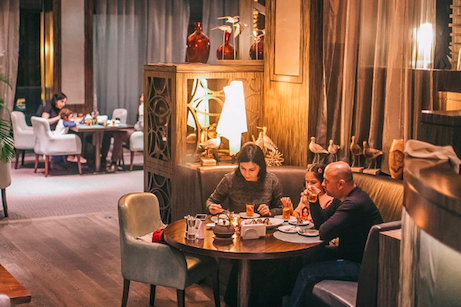

Address and Contact:
- Address:
Nasimi Baku, 1009, Azerbaijan
- Contact:
+994125950901
About This Restaurant:
Baku’s most experiential restaurant doubles as a museum, so while sampling the delights of Azerbaijani cuisine, expect to be taken on a journey through the city’s recent history. This enormous eatery is a veritable labyrinth of rooms and corridors whose core is a converted Medieval hammam, and it features a collection of antiques and curiosities expansive enough to rival an actual history museum. Each dining room has a unique theme, and one entire wing is devoted to the Soviet period – complete with a room kitted out like Lenin’s cabinet. Prices are remarkably reasonable, and booking is essential for evenings.
About This Restaurant:
Among Baku’s oldest bistros, Araz Cafe opened in 1953 and for many years serviced a cinema opposite. While it’s fondly remembered among older Bakuvians, for many of whom this was a familiar haunt during the Soviet era, the café also attracts everyone from families and young creatives to travellers with its very convenient Fountains Square location, authentic atmosphere, affordability and speedy service. The menu focusses almost entirely on Azerbaijani cuisine, with a vast selection of dishes such as pilafs, dolmas and qutabs (stuffed pancakes) as well as local beer and wine. Alternatively, come for tea and shisha.
Addres and Contact:
- Address:
1 İslam Səfərli, Səbail Bakı, 1000, Azerbaijan
- Contact:
+994503180207
Address and Contact:
- Address:
Namiq Quliyev, Qaradagh Baku, Azerbaijan
- Contact:
+994507534747
About This Restaurant:
In Baku’s southern Bibiheybət district, a quiet lane snakes down to a string of fish restaurants on the coast of the Caspian Sea. The best known is Dərya Fish House, a three-floor establishment whose clean and simple interior exudes a local feel and offers spectacular sea views. “Mainly, what we have is fish: sea and river fish, fried or prepared on the mangal, as well as local Azerbaijani dishes like buglama [lamb stewed with onions, tomatoes and peppers],” says manager Gunduz Osmanli of the menu, which includes white fish, mullet, pike perch and sturgeon caught daily from the Caspian. Prices are very reasonable; expect to pay no more than 30 Azerbaijani manats (£13.50) per person. There’s also a large playground area for kids and a private stretch of a seaside promenade.
About This Restaurant:
Nuxa is the historical name of Sheki, a charming city at the foot of the Caucasus Mountains in northwest Azerbaijan famous for its 18th-century old town with a Silk Road-style collection of cobblestone streets, mosques, hammams and caravanserais. And this restaurant brings a touch of all that – with its red-brick interior and dazzling lanterns inspired by Sheki’s famous caravanserai – to an otherwise nondescript area of Baku. “A long time ago, caravans went there, merchants on camels. It was both a hotel and a bazaar,” explains manager Elshad Rasulov. All of the staff are from Sheki, and while the cuisine is more broadly Azerbaijani, it’s a great place to sample dishes from the northwest, such as piti (a mutton and chickpea soup), which is served in a clay pot.
Address and Contact:
- Address:
Məhəmməd Naxçıvani, Nəsimi Bakı, Azerbaijan
- Contact:
+994504006611
Address and Contact:
- Address:
3 Kichik Qala, Səbail Bakı, 1000, Azerbaijan
-
Contact:
+994506000145
About This Restaurant:
Located in the heart of Baku’s Medieval Old City, the fourth floor of Çay Bağı 145 offers unparalleled views of the capital’s oldest and most mysterious landmark, the cylindrical Maiden Tower. “The incredible panorama takes your breath away,” says local food writer Emiliya Aliyeva, who also praises the nods to local culture adorning the restaurant’s interior – expect plenty of colourful Azerbaijani carpets. Çay Bağı 145 (Tea Garden 145) is well worth visiting for a typical tea, jam and sweets experience. Alternatively, come early for a traditional Azerbaijani breakfast: tandir bread with cheeses, honey and a range of omelettes. It also prides itself on having the best shisha in town, and in summer, you can enjoy it seated on the roof of a 15th-century hammam.
About This Restaurant:
The restaurant is located on the street with a rich history that begins with the oil boom in the 19th century and lasts until today. The street with the same name Passage has always been the center of trade and culture and one of the most popular places for tourists in the city. "Passage 145" now takes its turn in contributing to the street's history and successfully attracts both foreigner and the local people with its interior full of national elements and diverse cuisine. With an indoor area of 140 m2 and 100m2 on the outdoor terrace, it holds 116 seats. Urban view on busy city center complements well with traditional interior design and various tastes of national and continental breakfasts, refreshing drinks from the tea&coffee bar and delicate desserts
Address and Contact:
- Address:
Nigar Rafibeyli St., b37 145 Group, Baku Azerbaijan
- Contact:
+994 51 700 01 45
Sahil Bar & Restaurant

Address and Contact:
- Address:
Neftchilar 34 Seaside Boulevard, Baku 1122 Azerbaijan
- Contact:
+994 50 285 00 22
About This Restaurant:
Sahil is the first contemporary Caspian restaurant of Azerbaijan. The experienced kitchen team prepare superb specialities, balancing classic flavors with creative composition. The specially designed charcoal grill produce just the right level of intense heat to sear the meat perfectly and produce tender, aromatic kebabs.